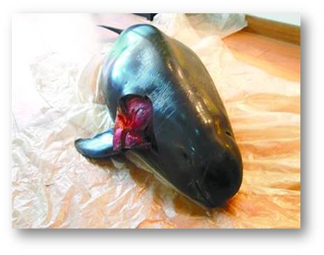
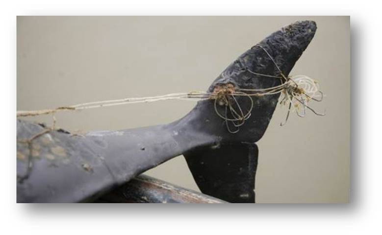
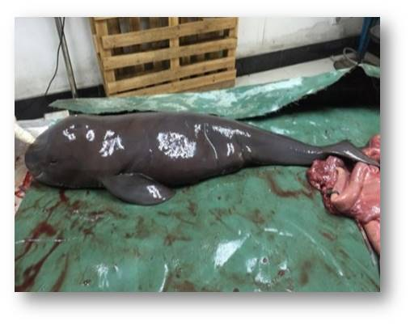

江豚——只有死亡才能被看见？
加过凯凯好友的人都知道，他的QQ、微信、微博头像全部都是江豚的照片。他的924条微博也几乎都是关于江豚。
凯凯是一名大三学生，几乎每个周末都会在清晨六点起床，前往位于武汉东湖之滨的白鱀豚馆，开启他一天的志愿工作。虽然只有21岁，凯凯却已经是一名经验丰富的大学生江豚保护志愿者了。说起他和江豚之间的故事，还得追溯到六年前的一条微博。
2012年，还在读高中的凯凯偶然间在网上看到这样一条微博：“洞庭湖一周之内发现9头江豚尸体，40多天的时间里，洞庭湖共发现江豚尸体12具。2012年上半年江豚死亡数量就已超过2011年全年江豚死亡数量的总和……”并配有大量江豚死亡的照片触目惊醒的数字和惨不忍睹的图片，给凯凯的心灵带来极大的震撼。从此，他和长江江豚结下了不解之缘，也因此改变了自己的人生轨迹。
2015年，凯凯高中毕业，身在广西的他第一次来到武汉，在体验了了半个月的江豚保护志愿者生活后，毅然选择来到离家千里的武汉读书，为了心中割舍不下的江豚。
简介
"嘴角常常挂着微笑"
“提起江豚，大部分人都不知道她是什么，有的人认为是鱼，有的人认为是海豚。”每每提及此事，凯凯总显得忧心忡忡。
穿梭在长江流域里的这个小生命，名叫江豚，因为她的嘴巴像是一直微笑着的模样。人们给她起了一个好听的名字——“微笑天使”。
但是，伴随着长江江豚数量的锐减，我们越来越难以看到她的微笑。
如今，全国江豚的数量可能已不足千头，2013年被列为世界自然保护联联盟《濒危物种红色名录》极度濒危级物种，2018年被列为《中国生物多样性红色名录》极度濒危物种，称她为“水中大熊猫”一点儿也不为过。
“人类却让她留下眼泪”
伴随长江这条黄金水道的开发利用，流域内船只来往密切，沿岸城市GDP逐年上升，废、污水排放量也与此成正向增长，江豚以其数量的减少和生存环境的改变，成为长江生态环境的“缩影”。
(注：长江中下游主要省份是指湖北、湖南、江西、安徽、江苏、上海；河流使用情况指各省GDP、水运货运量、污水排放量；江豚数量小数是根据已知年份1990、2006、2012、2013，按照函数曲线图计算将其连贯。)
航运、采砂、水利工程建设、过度捕捞等活动会压缩江豚的生存空间、掠夺江豚赖以生存的食物来源、干扰江豚的回声定位，这些都直接间接对江豚造成伤害，使其数量减少。
|  |  |  |
(注：图1为2013年1月8日在长江镇江段水域惨死在螺旋桨下的江豚；图2为2013年2月27日在洞庭湖扁山架北发现湖面漂浮因滚钩而死的江豚；图3为2016年4月27日在湖南湘江段发现因饥饿、营养不良、败血症等而死的孕豚。)
“只有死亡才能被看见？”
我们发现，人类对江豚的关注程度和其死亡数量呈现出大体同步的起伏趋势，这到底是人类的“警觉”还是“迟钝”？
(注：媒体和公众关注指数数据来源于百度指数，江豚死亡数量按照比例缩进一位小数)
就全国范围来看，本以为和江豚一起生活在长江中下游地区的人们对江豚的搜索量和关注度应该最高。然而实际情况却并非如此，例如在江豚死亡数量最多的江西省，公众传播数量为1504，相较于并非长江流域的四川、浙江、山东等省份的公众传播数量都在2000以上，甚至于北京市到达5941的数量。
(注：数据来源沃德社会气象台2017/06/01-2018/05/25统计，公众传播数量主要是指热门微博用户，通过拖动鼠标条，可放大或缩小呈现范围区域。)
除了“江豚”二字本身，人们对她的关注点实在是少得可怜。“江豚”作为一个孤立的话题存在，与“生态”、“环境”等相关话题关联度甚少，并未形成一个完整而丰富的传播网，以至于难以成为热点议题进入公众视野。而这，只是人们看到的冰山一角，关于江豚，还有太多未知的领域等待人类去探索和发现。
(注：数据来源沃德社会气象台2017/06/01-2018/05/25统计，网络平台是指微信、微博、网页、客户端、论坛、境外社交平台、境外主流媒体)
谈及“江豚”，在不同平台上的报道也会有不同的情绪反应，与此同时，国内外的反应也呈现不同的形态。海外与港澳台部分媒体（包括香港苹果日报、自由时报、法国欧洲时报、香港电台等媒体）和社交平台（Twitter、Facebook等）以报道江豚死亡的题材居多，国内公众更多的是以积极的心态去看待江豚，并愿意将这种心态付诸行动。
(注：数据来源沃德社会气象台2017/06/01-2018/05/25统计，所分析文章共有71183篇，其中海外与港澳台部分媒体文章45篇，社交平台文章334篇，情绪数量主要以百分比的形式呈现，通过不同平台情绪反应显示公众的整体态度及国内外对比。)
“道阻且长，行则将至”
在如此濒危的情形中，较有力的实践性保护措施已经开展，在江豚分布区附近，分别建立了自然保护区、迁地保护区和繁育保护群三类基地去保护江豚。
(注：根据左下角的目录选择，点击地图下方的播放键即可自动播放经度自西向东的江豚保护区，点击图上圆点即可查看该保护区名称及成立年份。)
与此同时，政府相关性提案及一系列NGO组织的活动也在逐步展开。

(注：官方相关性提案与NGO保护组织从图片两边逐渐出现实现保护形式的对接。)
这些年来，凯凯一直致力于保护江豚的志愿工作。从大学开始就开始收集各种有关江豚的文献资料。不仅如此，他还经常到野外看江豚、拍摄视频、照片、制作关于江豚的小短片，为引起社会大众对江豚的关注贡献着自己作为大学生的一份力量。
“愿我们永远看见她的微笑”
值得高兴的是，人类对江豚的保护在近年来取得了不错的成果。全国各大保护区都在忙着迎接江豚宝宝的出生。
2014年建成并运行的安庆长江江豚西江救护中心，在去年和前年各出生了一头小江豚，目前共有21头长江江豚在西江救护中心自由地栖息繁衍。
湖北石首长江天鹅洲豚类国家级自然保护区从1990年开始在此投放5头江豚试养，现生活有75头以上的江豚，而且每年还有8头以上的小江豚出生。2016年5月22日国际生物多样性日这一天，天鹅洲网箱里江豚“天天”和“鹅鹅”爱的结晶顺利降生，今年，小江豚两周岁生日当天，有了属于自己的名字，“贝贝”。
“人类只用花自己很少的一部分时间和精力来关爱江豚，但对江豚来说，这也许是她们的全部。”凯凯说：“期待更多的公众、更多的大学生关注和支持长江江豚保护，期待长江江豚能拥有一个美好的未来”。